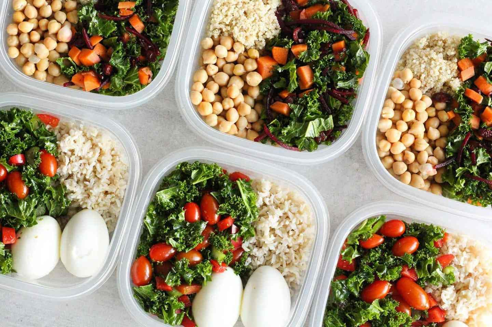
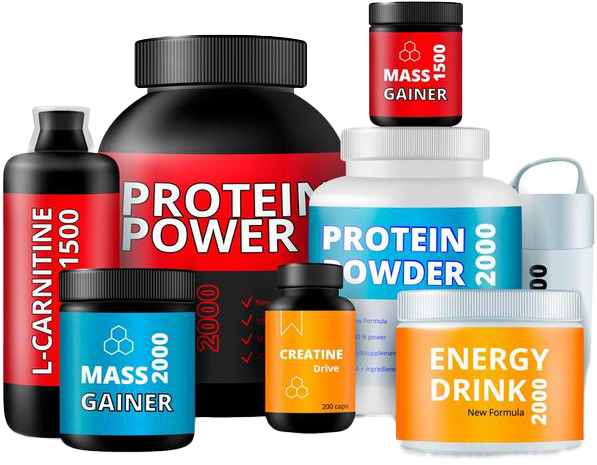
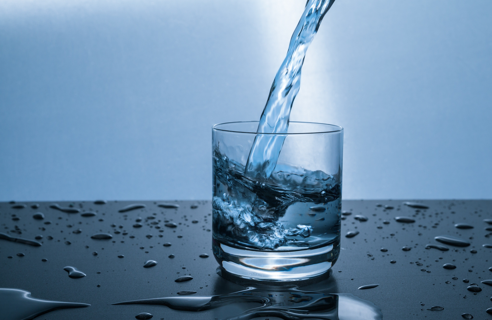
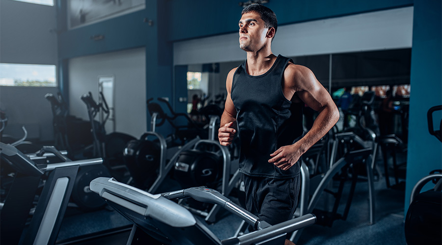

Voeding is een essentieel onderdeel van een gezonde en fitte levensstijl.
Een goede voeding kan u helpen om uw fitnessdoelen te bereiken,
uw energieniveau te
verhogen en uw algehele welzijn te verbeteren.
Op deze pagina vindt u nuttige informatie en tips over hoe u uw dieet kunt verbeteren om uw doelen te bereiken.
Eiwitten, koolhydraten en vetten zijn de drie belangrijkste voedingsstoffen die uw lichaam nodig heeft om goed te functioneren. Het is belangrijk om een gebalanceerde inname van deze voedingsstoffen te hebben om uw fitnessdoelen te bereiken.
Eiwitten: Eiwitten zijn de bouwstenen van spieren en helpen u om uw spiermassa te behouden en te vergroten. Voedingsmiddelen die rijk zijn aan eiwitten zijn onder andere kip, vis, eieren, noten, zaden en peulvruchten.
Koolhydraten: Koolhydraten zijn de belangrijkste energiebron van uw lichaam en helpen u om uw trainingen langer vol te houden. Kies voor complexe koolhydraten, zoals volkoren brood, bruine rijst, quinoa, haver en groenten.
Vetten: Vetten spelen een belangrijke rol bij het reguleren van uw hormoonspiegel en het ondersteunen van uw immuunsysteem. Kies voor gezonde vetten, zoals avocado's, noten, olijfolie en vette vis.
Hydratatie is belangrijk om je lichaam goed te laten functioneren. Water is nodig voor onder andere het reguleren van de lichaamstemperatuur, het transporteren van voedingsstoffen en het verwijderen van afvalstoffen uit het lichaam.
De hoeveelheid water die je nodig hebt hangt af van factoren zoals leeftijd, geslacht, gewicht en fysieke activiteit. Over het algemeen wordt aanbevolen om ongeveer 8 glazen water per dag te drinken, maar sommige mensen hebben mogelijk meer nodig.
Te veel water drinken kan echter leiden tot hyponatriëmie, een aandoening waarbij de natriumconcentratie in het bloed te laag is. Het is dus belangrijk om alleen te drinken wat nodig is om gehydrateerd te blijven en bij twijfel advies te vragen aan een medische professional.
Een bodybuilder moet zich focussen op zijn training en herstel. Tijdens de training moet hij zich richten op intensieve gewichtheffen met compound oefeningen, waarbij meerdere spiergroepen tegelijkertijd worden gebruikt.
Na de training moet hij zorgen voor voldoende herstel door middel van rust, voeding en slaap. Een gebalanceerde voeding, inclusief voldoende eiwitten, koolhydraten en vetten, is cruciaal voor spieropbouw en herstel. Het is ook belangrijk om voldoende water te drinken en alcohol te vermijden.
Tijdens het herstelproces kan het gebruik van foam rollers en massages helpen bij spierpijn en stijfheid. Het is belangrijk om naar je eigen lichaam te luisteren en indien nodig hulp te zoeken van een personal trainer of fysiotherapeut.
Maaltijdplanning kan u helpen om uw dieet op de juiste manier in balans te brengen.
Plan uw maaltijden vooruit en zorg ervoor dat elke maaltijd een goede balans heeft van eiwitten, koolhydraten en gezonde vetten. Verdeel uw maaltijden over de dag, zodat u regelmatig eet en voorkomt dat u honger krijgt.
Voedingssupplementen zijn producten die bodybuilders gebruiken om hun prestaties en gezondheid te verbeteren. Ze kunnen helpen bij het vergroten van spiermassa, het verminderen van hersteltijd en het verbeteren van fysieke prestaties.
Het is belangrijk om te onthouden dat supplementen geen vervanging zijn voor een gezond dieet en regelmatige lichaamsbeweging. Ze zijn bedoeld als aanvulling en hebben mogelijke bijwerkingen en risico's.
De meest voorkomende soorten zijn eiwitsupplementen, creatine, pre-workout, aminozuren en vetverbranders. Raadpleeg altijd een diëtist of arts voor gebruik.
